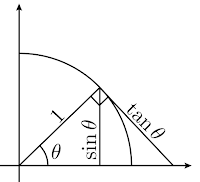

Problema 36
Demostrar que \( \lim_{\theta\to0}\frac{\sin\theta}{\theta} = 1 \)
Demostración. Obsérvese la figura que acompaña la demostración. En la figura se ilustra la definición de \(\sin\theta\) y \(\tan\theta\) en la circunferencia unitaria. Más aún, como el radio es 1, el arco que subtiende al ángulo \(\theta\) mide \(\theta\). Suponiendo que \(0 < \theta < \frac{\pi}{2}\) se cumple que
$$ \sin\theta < \theta < \tan\theta $$Notando que \(\frac{\sin\theta}{\theta} > 0\) y \(\theta\) se sigue que
$$ \frac{1}{\sin\theta}>\frac{1}{\theta} > \frac{1}{\tan\theta} $$ $$ \frac{\theta}{\sin\theta} > 1 > \frac{\theta}{\tan\theta} $$ $$ \frac{\theta}{\sin\theta} > 1 > \frac{\theta\cdot\cos\theta}{\sin\theta} $$ $$ \frac{\theta}{\sin\theta} \frac{\sin\theta}{\theta} > 1 \cdot \frac{\sin\theta}{\theta} > \frac{ \theta \cdot \cos \theta}{ \sin \theta} \frac{\sin\theta}{\theta} $$ $$ \cos\theta < \frac{\sin\theta}{\theta} < 1 $$Además, como el seno es una función impar y el coseno es una función par se tiene que \(\frac{\sin\theta}{\theta} = \frac{\sin(-\theta)}{-\theta}\) y \(\cos\theta=\cos(-\theta)\), la misma desigualdad se cumple para \(\theta < 0\). Esto último nos permite tomar el límite \(\theta\to 0\) sin necesidad de hacerlo por la derecha. Así,
$$ \lim_{\theta\to 0} \cos\theta \leq\lim_{\theta\to 0} \frac{\sin\theta}{\theta} \leq \lim_{\theta\to 0}1 $$Notando que \(\displaystyle \lim_{\theta\to 0}\cos\theta=1\), por el teorema del sándwich se tiene que $$ \lim_{\theta\to 0}\frac{\sin\theta}{\theta} = 1 \qquad \blacksquare $$